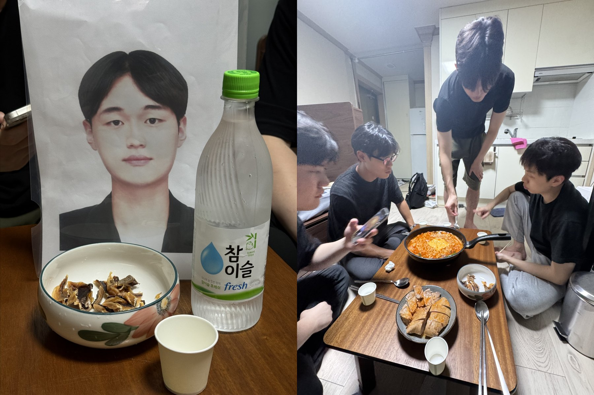

Weekly Drinking Promotion
Association (WDPA)
입력 : 2026년 8월 13일

김성민 해외지부 운영총괄 텍사스 출국 전 마지막 회동 현장 / 사진=WDPA
김성민 해외지부 운영총괄의 텍사스 출국을 앞두고 진행된 매주술권장협회 핵심 운영진의 특별 송별 일정이 송병완 상무이사의 팬트하우스에서 최종 마무리됐다.
13일 협회 관계자들에 따르면 허근영 전무이사, 김성민 해외지부 운영총괄, 정철현 감사, 송병완 상무이사, 최민규 상근부회장은 동천동 황소고집에서의 1차 만찬과 볼링을 중심으로 한 2차 체육 프로그램을 마친 뒤 마지막 회동 장소로 이동했다.
개인 일정으로 이날 현장에 직접 참석하지 못한 한창희 협회장 역시 1차 회동부터 함께했던 사진 형태의 비대면 참석 방식을 그대로 유지했다. 운영진은 장소를 이동할 때마다 한 협회장의 사진을 빠짐없이 챙기며 사실상 전 일정에 동행시키는 고강도 의전을 이어간 것으로 알려졌다.
목적지는 불과 닷새 전 허 전무이사와 최 상근부회장의 전격 방문으로 세간의 관심을 모았던 송병완 상무이사의 자택이었다.
운영진은 이동에 앞서 마지막 회동에 필요한 최소한의 전략물자를 추가 확보했다.
이 과정에서 정철현 감사가 직접 소량의 소주와 프리미엄 부대찌개 밀키트 구매 비용을 전액 부담하겠다고 밝히면서 현장에서는 즉각적인 환호성이 터져 나온 것으로 알려졌다.
특히 해당 부대찌개는 엄선된 햄과 소시지, 각종 채소와 농축 육수로 구성된 가정간편식 기반 초호화 전골 패키지로, 장시간 이어진 일정의 마지막 식사로 부족함이 없다는 평가를 받았다.
한 참석자는 “정 감사가 사겠다고 말하는 순간 모두의 표정이 눈에 띄게 밝아졌다”며 “앞서 아이스크림 비용을 두고 가위바위보까지 벌였던 사람들이 맞는지 의문이 들 정도의 단결력이었다”고 말했다.
식량과 주류 확보를 마친 운영진은 들뜬 마음과 가벼워진 지갑을 안고 송 상무이사의 팬트하우스로 향했다.
해당 자택은 약 20.5km만 이동하면 한강이 눈앞에 펼쳐지는 이른바 ‘한세권’의 핵심 입지로, 지난 8일 허 전무이사와 최 상근부회장의 현장답사를 통해 그 지리적 가치가 이미 한 차례 확인된 바 있다.
다만 이날 역시 건물 내부의 수직 이동을 지원하는 엘리베이터는 새롭게 설치되지 않은 것으로 확인됐다.
운영진은 장시간의 음주와 볼링으로 상당한 체력을 소모한 상황에서도 직접 계단을 오르며 팬트하우스 진입에 성공했고, 이 과정에서도 한 협회장의 사진은 별다른 이탈 없이 무사히 최상층까지 이동한 것으로 전해졌다.
팬트하우스에 도착한 운영진은 확보한 식재료를 곧바로 조리하기 시작했다.
테이블 중앙에는 햄과 소시지, 채소가 진한 육수 속에서 조화를 이루는 부대찌개가 배치됐다.
끓는 시간이 길어질수록 육수에 각종 재료의 풍미가 더해졌고, 참석자들은 뜨겁고 얼큰한 국물과 함께 남아 있던 소주를 나누며 이날 세 번째 공식 만찬을 시작했다.
그러던 중 송병완 상무이사가 직접 추가 요리를 선보이겠다고 선언하면서 또 한 번의 특별 프로그램이 시작됐다.
송 상무이사는 별도의 외부 조리인력 지원 없이 직접 주방으로 이동해 보유 중인 식재료를 활용한 즉석 요리에 착수했다.
잠시 후 테이블에는 기존 메뉴에서는 쉽게 찾아보기 어려운 독창적인 비주얼과 풍미를 갖춘 이른바 ‘송병완 셰프 스페셜 디시’가 모습을 드러냈다.
첫 시식에 나선 운영진 사이에서는 잠시 정적이 흐른 것으로 전해졌다.
일반적인 조리법으로는 쉽게 구현하기 어려운 특이한 맛이 입안에 퍼졌기 때문이다.
그러나 참석자들은 별도의 평가나 토론을 진행할 틈도 없이 연이어 숟가락을 들었고, 해당 요리는 예상보다 빠른 속도로 소진됐다.
현장 관계자는 “처음 먹어보는 맛이라는 표현이 가장 정확했다”며 “맛을 분석하려고 했는데 정신을 차려보니 다시 숟가락을 들고 있었다”고 말했다.
또 다른 참석자는 “미식의 영역에서는 익숙함만이 정답은 아니다”라며 “송 상무이사가 기존 조리문법에 상당히 과감한 질문을 던진 것으로 평가한다”고 밝혔다.
시간이 흐르면서 이날 세 차례에 걸쳐 이어진 송별 회동의 분위기도 절정에 접어들었다.
황소고집에서 시작된 고기와 소주, 볼링장에서의 치열한 승부와 아이스크림 쟁탈전, 그리고 한세권 팬트하우스에서 이어진 부대찌개까지 장시간 일정을 함께한 운영진은 하나둘 기분 좋게 취기가 오른 상태에서 마지막 대화를 이어갔다.
특히 현장에 직접 참석하지 못한 한창희 협회장의 사진 역시 테이블 한편에서 끝까지 자리를 지킨 것으로 알려졌다.
협회 관계자는 “1차부터 3차까지 장소가 여러 차례 변경됐지만 한 협회장의 사진만큼은 단 한 번도 누락되지 않았다”며 “물리적 참석에는 실패했지만 사진 참석률만 놓고 보면 100%를 기록한 셈”이라고 평가했다.
김성민 해외지부 운영총괄의 텍사스 출국을 앞두고 진행된 마지막 자리였던 만큼 평소보다 쉽게 자리를 끝내지 못했지만, 늦은 시간이 되자 참석자들은 하나둘 귀가를 결정했다.
운영진은 김 총괄과 다시 만날 날을 기약하며 송 상무이사의 팬트하우스를 빠져나왔고, 이 과정에서 한 협회장의 사진 역시 별도의 분실 사고 없이 무사히 회수되면서 이날 장시간에 걸친 공식 송별 회동은 최종 종료됐다.
한편 이날 황소고집에서 처음 발령된 김성민 해외지부 운영총괄의 텍사스 파견 대비 ‘데프콘 1(DEFCON 1)’급 송별 대응체계는 팬트하우스 회동 종료와 함께 공식 해제된 것으로 알려졌다.
협회는 향후 김 총괄의 텍사스 현지 활동이 본격화되는 대로 해외지부와의 비상 연락망을 재가동하고, 필요할 경우 화상 음주를 포함한 원격 회동 체제 도입도 검토한다는 방침이다.
〈김성민 텍사스 출국 특별기획 完〉